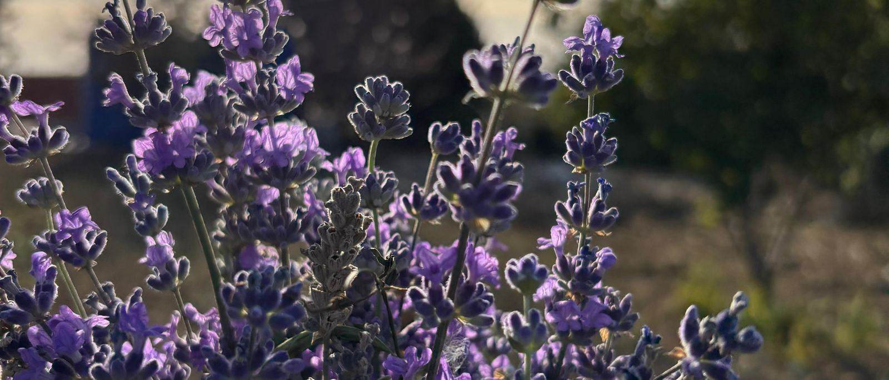

Portfolio · Business development & strategyPortfolyo · İş geliştirme ve strateji
Hi, I'mMerhaba, ben
Ali Nadir Koç
Civil engineer turned strategist · bağlama playerStratejiye geçmiş bir inşaat mühendisi · bağlama sanatçısı
I'm an engineer at heart who found his way into strategy. At Arkoçlar I built our solar plant and renewed our BP station's infrastructure down to the tanks and pipelines. In between, I went to Boston and San Francisco for two master's degrees, and came back to Çanakkale as CEO for strategy and development. I still like to see the numbers before I make a call.
Yolu stratejiye çıkmış, özünde bir mühendisim. Arkoçlar'da güneş santralimizi kurdum, BP istasyonumuzun altyapısını tanklarına ve boru hatlarına kadar yeniledim. Arada Boston ve San Francisco'da iki yüksek lisans yaptım ve Çanakkale'ye, strateji ve geliştirmeden sorumlu CEO olarak döndüm. Bir karar vermeden önce rakamları görmeyi hâlâ severim.
Current roleGörevCEO, Strategy & Development · ArkoçlarCEO, Strateji ve Geliştirme · Arkoçlar
2019In the field sinceSahada, şu yıldan beri
2Master's degreesYüksek lisans
12Projects belowProje
A-02
A few notes about meBenim hakkımda birkaç not
Every drawing sheet has a box of general notes, the things you should know before you read the rest. Here are mine.
Her paftada bir genel notlar kutusu vardır: geri kalanını okumadan önce bilmen gerekenler. Bunlar da benimkiler.
I'm an engineer first. I like projects you can stand next to, like a fuel station we renewed down to its tanks and pipelines.
Önce mühendisim. Yanında durabileceğin projeleri severim; tanklarına ve boru hatlarına kadar yenilediğimiz bir istasyon gibi.
I went back to school on purpose. After two years in the field, two master's degrees at Hult taught me to back a decision with data, not just instinct.
Okula bilerek geri döndüm. Sahada geçen iki yılın ardından Hult'taki iki yüksek lisans, bir kararı sadece sezgiyle değil veriyle de desteklemeyi öğretti.
I like to see the numbers. Before a big call I open SQL, Python, R or Tableau and look for what the data says.
Rakamları görmeyi severim. Büyük bir karardan önce SQL, Python, R ya da Tableau'yu açıp verinin ne söylediğine bakarım.
I'm also a musician. I play the bağlama, the long-necked lute at the heart of Turkish folk music, professionally. The engineer, the strategist and the artist are the same person.
Bir yanım da sanatçı. Profesyonel olarak bağlama çalıyorum. Mühendis, stratejist ve sanatçı aynı kişi.
Before strategy, there was the wind. I kiteboarded and windsurfed at PWA World Tour events in Alaçatı, Datça and Istanbul, played tennis through university and chess for my school team.
Stratejiden önce rüzgâr vardı. PWA Dünya Turu'nun Alaçatı, Datça ve İstanbul etaplarında kiteboard ve windsurf yaptım, üniversite boyunca tenis, okul takımında satranç oynadım.
— Ali
A-03
Selected workSeçilmiş projeler
From our own fuel station to Hult's classrooms: field, strategy, investment and data projects.
Kendi istasyonumuzdan Hult'un sınıflarına: saha, strateji, yatırım ve veri projeleri.
STR-01 · FeaturedÖne çıkan
Batt2Life
Second-life EV batteries for solar storage · Hult MIB · team of 6 · 2022Elektrikli araç pillerine ikinci hayat · Hult MIB · 6 kişilik takım · 2022
EV batteries are replaced once they drop to about 80% capacity, which will leave a growing supply of discarded packs. Batt2Life tests and reconfigures them into affordable storage for homes and communities running on solar, and sends the packs that fail to raw-material recycling.
Elektrikli araç pilleri kapasiteleri yaklaşık %80'e düştüğünde değiştiriliyor ve bu da giderek büyüyen bir kullanılmış pil arzı yaratıyor. Batt2Life bu pilleri test edip yeniden yapılandırarak güneş enerjisiyle çalışan ev ve topluluklar için uygun fiyatlı depolamaya dönüştürüyor; testi geçemeyenleri ham madde geri dönüşümüne gönderiyor.
We built the trend matrix and research plan, analyzed South Africa's market and regulations, wrote the 4P/5C marketing plan, and outlined B2B entry with automotive suppliers in Bursa and İzmir.
Trend matrisini ve araştırma planını hazırladık, Güney Afrika pazarını ve mevzuatını inceledik, 4P/5C pazarlama planını yazdık ve Bursa ile İzmir'deki otomotiv tedarikçilerine yönelik B2B giriş planını çıkardık.
Target prices are from our 2022 business plan. Battery costs have fallen since, so the same packs would likely be priced lower today.
Hedef fiyatlar 2022 iş planımıza aittir. Pil maliyetleri o zamandan bu yana düştü; aynı paketler bugün büyük ihtimalle daha düşük fiyatlanırdı.
01 · SupplyTedarikRetired EV battery, ~80% capacityKullanım dışı EV pili, ~%80 kapasite
02 · CheckKontrolTest cells and reconfigureHücreleri test et, yeniden yapılandır
PassesGeçerseSolar storage pack with warrantyGarantili güneş depolama paketi
FailsGeçemezseDisassembly and raw-material recyclingSöküm ve ham madde geri dönüşümü
FLDfield projectsaha projesiSTRstrategy & market entrystrateji ve pazara girişINVinvestment analysisyatırım analiziDATdata & analyticsveri ve analitik
FLD-02
BP station infrastructure renewalBP istasyonu altyapı yenilemesi
2023. Complete renewal of the BP station's infrastructure: fuel tanks, pipelines, pumps and forecourt concrete, plus an EV charging station and its infrastructure, from planning to handover.
2023. BP istasyonunun tüm altyapısının yenilenmesi: yakıt tankları, boru hatları, pompalar, saha betonu ve elektrikli araç şarj istasyonu ile altyapısı; planlamadan teslime kadar.
Site management · Mechanical systems · EV chargingSaha yönetimi · Mekanik tesisat · Elektrikli araç şarjı
FLD-03
Lavender garden, from field to shelfLavanta bahçesi, tarladan rafa
A 5-decare (about 5,000 m²) lavender garden on the station grounds. Lavender oil and other products go straight onto the station market's shelves.
İstasyon arazisinde 5 dönümlük lavanta bahçesi. Lavanta yağı ve diğer ürünler doğrudan istasyon marketinin raflarında satılıyor.
Agriculture · Product development · RetailTarım · Ürün geliştirme · Perakende

INV-04
DoorDash vs. Uber
Compared annual growth of 105.87% against 36.22% and DoorDash's expansion through Wolt. Recommended DoorDash.
Yıllık %105,87 ile %36,22 büyümeyi ve DoorDash'in Wolt üzerinden genişlemesini karşılaştırdım. DoorDash'i önerdim.
PitchBook · WSJ · Excel
INV-05
Ally Financial vs. PayPal
Recommended Ally after a 20% dividend increase and a $2B share buyback, while PayPal fell 30% in three months.
Ally'nin %20 temettü artışı ve 2 milyar $'lık hisse geri alımına karşılık PayPal'ın üç ayda %30 düşüşü nedeniyle Ally'yi önerdim.
WSJ · stock price analysishisse fiyatı analizi
STR-06
Zomato
Blue Ocean analysis of how delivery cleared access and cultural barriers to restaurant food in India, plus a competitor and strengths review.
Teslimatın Hindistan'da restoran yemeğine erişimdeki ulaşım ve kültürel engelleri nasıl kaldırdığının Mavi Okyanus analizi; rakip ve güçlü yön değerlendirmesi.
Blue Ocean · competitive analysisrekabet analizi
STR-07
Stitch Fix: Malaysia & SingaporeStitch Fix: Malezya ve Singapur
Market-entry plan covering market size, competitors, online clothing demand, revenue model and regression on training data.
Pazar büyüklüğü, rakipler, online giyim talebi, gelir modeli ve regresyon analizini kapsayan pazara giriş planı.
ERRC · SWOT · BCG · regressionregresyon
STR-08
Kindle
5C marketing analysis: customer profile, the subscription advantage, competitors and collaborators in the e-reader market.
5C pazarlama analizi: müşteri profili, abonelik avantajı, e-okuyucu pazarındaki rakipler ve iş ortakları.
5C · Statista
STR-09
Getir
Business model canvas for the quick-commerce grocery delivery company.
Hızlı market teslimatı şirketi için iş modeli kanvası.
Business Model Canvas
DAT-10
Whole Foods pricingWhole Foods fiyat analizi
Measured the price premium per 100 calories for gluten-free, keto and vegan products. Recommended expanding these lines under the private 365 brand.
Glutensiz, keto ve vegan ürünlerin 100 kalori başına fiyat primini ölçtüm. Bu ürünlerin 365 markası altında genişletilmesini önerdim.
SQL · t-test · Excel
DAT-11
Portfolio risk analysisPortföy risk analizi
Returns, volatility and risk-adjusted return per ticker, plus each holding's weight and risk contribution in a client portfolio.
Hisse başına getiri, volatilite ve riske göre düzeltilmiş getiri; bir müşteri portföyünde her varlığın ağırlığı ve risk katkısı.
MySQL · CTE · window functionspencere fonksiyonları
Found the loss-making cities in Texas, Illinois and Colorado and tied the losses to heavy discounting. Recommended targeted campaigns and lower discount rates.
Texas, Illinois ve Colorado'da zarar eden şehirleri bulup zararı yüksek indirimlere bağladım. Hedefli kampanyalar ve daha düşük indirim oranları önerdim.
Tableau
A-04
ExperienceDeneyim
2023 – Present2023 – Halen
CEO, Strategy & DevelopmentCEO, Strateji ve Geliştirme
Arkoçlar Construction, Tourism, Energy & Oil · ÇanakkaleArkoçlar İnşaat, Turizm, Enerji ve Petrol · Çanakkale
Lead company strategy and development across construction, energy and fuel retail.
Expanded the on-grid solar plant from 100 kW to 200 kW.
Oversee fuel station and convenience store operations, staffing and monthly financial reporting.
Established a 5-decare (about 5,000 m²) lavender garden on the station grounds; lavender oil and other products are sold in the station market.
İnşaat, enerji ve akaryakıt perakendeciliği alanlarında şirket stratejisi ve geliştirme faaliyetlerinin yönetimi.
Şebekeye bağlı güneş enerjisi santralinin 100 kW'tan 200 kW'a genişletilmesi.
Akaryakıt istasyonu ve market operasyonlarının, personelin ve aylık finansal raporlamanın denetimi.
İstasyon arazisinde 5 dönümlük lavanta bahçesinin kurulması; lavanta yağı ve diğer ürünlerin istasyon marketinde satışı.
2023
Project Lead, BP Station Infrastructure RenewalProje Lideri, BP İstasyonu Altyapı Yenilemesi
Arkoçlar · ÇanakkaleArkoçlar · Çanakkale
Complete renewal of the station's infrastructure: fuel tanks, pipelines, pumps and forecourt concrete.
Installation of an electric vehicle charging station and its supporting infrastructure.
Day-to-day operation of the station taken over on completion.
İstasyonun tüm altyapısının yenilenmesi: yakıt tankları, boru hatları, pompalar ve saha betonu.
Elektrikli araçlar için şarj istasyonu ve altyapısının kurulması.
Tamamlanmasının ardından istasyon işletmesinin devralınması.
09/2021 – 04/2023
Graduate studyYüksek lisans
Hult International Business School · Boston & San Francisco
Full-time M.S. International Business and M.S. Business Analytics. See Education.
Tam zamanlı Uluslararası İşletme ve İş Analitiği yüksek lisansları. Bkz. Eğitim.
05/2019 – 08/2021
Business Development Managerİş Geliştirme Müdürü
Arkoçlar Construction, Tourism, Energy & Oil · ÇanakkaleArkoçlar İnşaat, Turizm, Enerji ve Petrol · Çanakkale
Engineered, designed and led the build of a 100 kW on-grid solar energy system.
Responsible manager of the LPG autogas station and filling facility: regular safety checks and reporting to the Chamber of Mechanical Engineers.
Set long-term growth strategy; researched and qualified leads; negotiated contracts.
Tracked weekly, monthly and quarterly sales metrics and kept the CRM up to date.
100 kW'lık şebekeye bağlı güneş enerjisi sisteminin tasarımı ve kurulum yönetimi.
LPG otogaz istasyonu ve dolum tesisinin sorumlu müdürlüğü: düzenli güvenlik kontrolleri ve Makine Mühendisleri Odası süreçleri.
Uzun vadeli büyüme stratejisinin belirlenmesi; potansiyel müşteri araştırması ve sözleşme müzakereleri.
Haftalık, aylık ve çeyreklik satış metriklerinin takibi ve CRM yönetimi.
A-05
EducationEğitim
09/2022 – 04/2023 · San Francisco
M.S. Business Analytics (STEM)İş Analitiği Yüksek Lisansı (STEM)
Hult International Business School
SQL, Python, R, machine learning, Tableau, business analysis with structured data.
SQL, Python, R, makine öğrenmesi, Tableau, yapılandırılmış veriyle iş analizi.
09/2021 – 08/2022 · Boston
M.S. International BusinessUluslararası İşletme Yüksek Lisansı